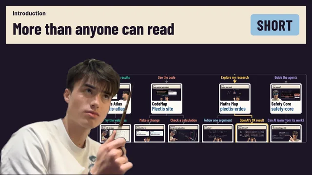

Short film, 1:37Introduction
Where do I start?
I do mathematics research and build software with AI agents, and I build ways to inspect what the agents produce. The introduction says what each project makes easier to understand and which short film to try first.